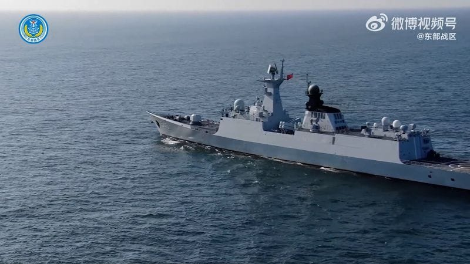

世界苦茶04月02日新闻 | 46条 | 中国百强房企销售继续下滑

中国百强房企销售继续下滑 | 中央统战部与组织部部长对调职位 | 泰国垮塌审计署钢筋涉及劣等品 | 具有典型意义的威斯康星最高院选举自由派获胜 | 特朗普再称将于金正恩直接接触 | 俄罗斯拒绝接受特朗普的和平协议
中国经济连续剧
苦茶数据
美元兑人民币：7.27（昨日7.27，前日7.25）
美元兑日元：149.82（昨日149.62，前日150.06）
上证指数：3356（昨日3355，前日3321）
标普500指数：5633（昨日5611，前日5580）
比特币：84664（昨日82917，前日83825）
布伦特原油：74.50（昨日74.74，前日73.40）
中国新闻
• 《星岛日报》指，中共中央政治局3月31日开会，通过了对调中组部长和统战部长的决定，石泰峰任中央组织部长，李干杰任中央统战部长。 （翻评：不懂这是为什么。）
• 中国男子金门偷渡被羁押 ：台湾法院星期二裁定，将一名偷渡到金门的中国大陆男子羁押。综合《自由时报》《联合报》等台媒报道，台湾检方通报，海巡署金马澎分署第九金门岸巡队第1机动巡逻站人员，上午6时49分执行清晨巡逻，在金门寒舍花前岸际查获这名53岁郑姓男子乘坐充气式橡皮艇利用划桨企图偷渡入境，经岸巡人员当场逮捕调查并移送金门地检署。消息人士称，男子自称在大陆遭迫害，且没有言论自由，才在网上买橡皮艇冒险偷渡。
• 习近平祝中印建交75周年 ：中国国家主席习近平星期二同印度总统穆尔穆互致贺电，庆祝两国建交75周年。习近平在贺电中提出，“实现‘龙象共舞’是双方的正确选择”。据中国央视新闻报道，习近平说，中印关系发展历程表明，做相互成就的伙伴、实现龙象共舞“是双方的正确选择，完全符合两国和两国人民根本利益”。习近平强调，双方应坚持从战略高度和长远角度看待和处理中印关系，共谋相邻大国和平共处、互信互利、共同发展的相处之道，共同推进世界多极化和国际关系民主化。
• 耒水铊污染事件告终 ：湖南官方通报，受到铊污染的湘江最大支流耒水水质已全线恢复正常。耒水流域在上月中旬出现铊浓度异常。湖南省生态环境厅星期一在官网发通报称，在生态环境部应急办和专家技术人员指导下，有关各方应对处置，目前耒水水质已全线恢复正常，各监测点位铊浓度均在0.1微克/升以下。铊是一种有毒的重金属，为无色无味的结晶。通报援引疾控部门检测数据指，自3月16日以来，耒水河段各自来水厂出水水质一直稳定达标，供水安全。当局将继续督促指导郴州、衡阳市加强标本兼治、系统治理，更好守护水生态安全。
• 日本大使探视间谍嫌犯 ：日本驻华大使金杉宪治星期一第五次探视涉间谍罪被起诉的日籍药企员工。日本共同社星期一引述日本政府人士报道，日本驻华大使金杉宪治当天对涉嫌从事间谍活动被中国检方起诉的日本制药公司安斯泰来的日籍男员工进行第五次领事探视。截至今年3月20日，上述男子已被拘留满两年。金杉宪治希望通过探视表明不放弃争取早日放人的姿态。
• 国内航班燃油费下调 ：中国将从4月5日起下调国内航线燃油附加费。据中国央视新闻报道，记者星期二从多家航空公司了解到这一讯息。调整后，成人旅客国内航线燃油附加费征收标准为800公里以上航段，每人每航段收取20元人民币；800公里及以下航段，每人每航段收取10元。与调整前的标准相比，分别下调了20元和10元。
• 华裔教授遭搜家后被解雇 ：美国印第安纳大学计算机科学系华裔教授王晓峰在住家被美国联邦调查局搜查当天，遭校方开除。据美国消费者新闻与商业频道报道，王晓峰所属的大学教授工会星期一在致函印第安纳大学要求对方解除对王晓峰的解雇指令时透露，该校在美国联邦调查局人员到王晓峰和妻子拥有的两个住家搜查当天，将他开除。美国大学教授协会布卢明顿分会星期一致函印第安纳大学抗议对方开除王晓峰，并指校方没按照条例进行最高级别的审查流程。
• 中国海军开设海外社交账号 ：中国海军在社交平台X和YouTube开通官方账号，成为中国军兵种部队中在海外社交平台开设的首个账号。中国官媒形容，此举是“针对全球互联网用户的魅力攻势”。综合《环球时报》和《中国日报》报道，中国海军星期一以英文名“ChinaNavy”，在X和YouTube开通官方账号，并使用双航母编队照片作为账号背景图。中国海军的X账号目前已发布两则贴文。其中一则用英文写道：“我们是中国海军。从亚丁湾护航到海外救援，从远海医疗服务到执行人道主义撤离任务，我们带着责任和希望，在大洋彼岸航行。我们是捍卫主权和每一寸领土的守护者，也是打造海洋命运共同体的伙伴。”
• 住宅规范新规，层高与电梯标准 ：中国发布住宅项目新规范，建筑层高不低于3米，四层及以上新建住宅须设置电梯。据中新社报道，记者星期一从中国住房和城乡建设部获悉，为适应民众提升居住品质的需要，国家标准《住宅项目规范》发布，将于今年5月1日实施。新规范以住宅项目整体为对象，以安全、舒适、绿色、智慧为目标，在规模、布局、功能、性能和关键技术措施等方面，对住宅项目的建设、使用和维护作出规定。
• 美对涉藏中国官员限签 ：美国国务卿鲁比奥星期一说，美国对主管外国人进入西藏地区相关政策的中国官员，实施了额外的签证限制。据路透社报道，鲁比奥在声明中称：“长期以来，中国共产党拒绝让美国外交官、记者和其他国际观察员进入西藏自治区和中国其他藏区，而中国的外交官和记者却在美国享有广泛的自由。”声明中没有提到任何中国官员的名字，也没有详细说明美国的措施。
• 歼36密集试飞震慑美防长访亚 ：美国国防部长赫格塞斯开启首次亚太之行前，被认为是中国第六代战机的“歼36”在十天内至少进行三次试飞。受访学者认为，中国试图借六代机试飞予以强势警告，中美很可能在军事上开启更激烈的博弈。被舆论称为“歼36”的中国新型战机，自去年12月完成首飞后，在3月份展开密集试飞。综合互联网资料，“歼36”在3月17日、3月25日至26日都被拍摄到进行试飞，其中17日和26日可能在上午和下午分别进行了试飞。根据相关影像，“歼36”在这些试飞中进行了收起起落架、小半径转弯、空中放油等测试科目，一些重要的细节设计也为外界所捕捉。
亚太印太新闻
• 民众党批陆军演助长民进党 ：解放军在台湾周边演训，台湾民众党立委说，大陆军演让民进党政府抗中策略继续发酵，“请中共不要作民进党最佳战友。”据台湾《联合报》报道，民众党立法院党团星期二上午举行记者会。民众党主席黄国昌说，对于大陆武力恫吓的行为，民众党团表达强烈谴责，台湾人民也不会屈服，仍然会持续争取自由民主与法治。
• 两陆配宣扬武统遭驱逐 ：继中国大陆籍配偶亚亚之后，再有两名陆配小微、恩绮也因宣扬武统台湾言论，被台湾移民署限期出境。恩绮在限期届满当天星期一离境，小微则逾期逗留，在星期二被移民署强制驱逐出境。综合台湾《联合报》和TVBS新闻网报道，小微星期二上午11时25分在新北市专勤队人员陪同下，约12时02分抵达桃园机场。因担心有心人士到场抗议，航警局接获情资后召开会议，派驻42名警力到现场戒备，移民署则派出约30人维持机场周围秩序。小微抵达机场后，在移民署人员的陪同下前往办理登机手续。在移动过程中，她突然拉下口罩大喊“做一个堂堂正正的中国人，我有错吗？我爱家爱国，我有错吗？”。
• 赖清德要求严密应对军演 ：针对中国大陆解放军星期二起对台湾周边开展联合演训，台湾总统赖清德当天指示台国安和国防等单位严密应处。综合中天新闻网、联合新闻网和台湾《自由时报》等报道，大陆星期二宣布对台军演，台湾总统府发言人郭雅慧当天说，总统赖清德第一时间已指示国安与国防等相关单位严密应处，对于相关状况皆有全面掌握，面对外部威胁，政府将持续捍卫民主自由的宪政体制，有信心、有能力捍卫台湾主权、守护人民安全、维护社会安定。总统府并对中国大陆的举动表达严厉谴责。郭雅慧指出，确保台海及印太区域的和平稳定，是国际社会最大共识，并牵涉全球共同核心利益。中国大陆作为区域一员，近日持续在台海周边及印太区域，包括新、澳、日、韩、菲律宾南中国海等区域各方国际海域，以军事挑衅、海上灰色地带袭扰等单边行径，破坏区域安全稳定、片面升高区域情势、公然挑战国际秩序，是国际社会公认的麻烦制造者。
• AIT批陆军演危及地区安全 ：中国大陆解放军东部战区星期二通报，从即日起在台湾周边开展联合演训后，美国在台协会发言人批评，大陆将地区安全与繁荣置于险境，并强调美国将继续支持台湾。据《自由时报》报道，AIT发言人星期二表示，密切关注大陆解放军在台湾附近的活动。AIT发言人说，大陆日益升级的武力恐吓策略只会加剧紧张局势，并破坏两岸和平稳定，大陆也已展现自身的不负责任，无疑将地区安全与繁荣置于险境。AIT发言人也指出，大陆在台湾周遭的不负责任的威胁与军事施压行动毫无道理，面对大陆的军事、经济、资讯与外交施压，美国将继续支持台湾。
• 缅甸地震死者破2700人 ：缅甸强震死亡人数增至2719人，全国为地震遇难者默哀一分钟。这场7.7级浅层地震发生四天后，缅甸许多人由于无法返回毁坏的房屋，仍在露宿，有些灾民则因担心再有余震，不敢回家。法新社报道，默哀的警报在星期二下午12时51分02秒响起，这是上星期五地震发生的时间。
• 柯文哲用药过量人权团体关切 ：台湾中华人权协会称，民众党前主席柯文哲使用吗啡类止痛药已达最高剂量，应尽速戒护就医。据联合新闻网报道，中华人权协会星期二称，柯文哲因京华城案、政治献金案羁押超过七个月，在看守所内健康状况急剧恶化，台北地方法院无视柯文哲病情，仍裁定延押两个月。该协会称，柯文哲因腰痛使用吗啡类止痛药，已达成人一天最高剂量，医学专业人士均认为状况危急，但台北看守所仍表示柯文哲的状况稳定，并未达留院观察标准。
• 泰审计署楼钢筋涉中企劣品 ：泰国工业部的初步调查发现，坍塌的国家审计署大楼所使用的其中一种钢筋，来自泰国一家早已被发现产品不合格的中资企业。《民族报》报道，工业部长阿卡那的助理提迪巴星期一说，泰国钢铁研究所检测结果发现，大楼所使用的结构钢筋当中，其中一家公司的钢筋样品不符合所规定的标准。提迪巴的部门去年12月稽查这家公司在罗勇府的工厂后，发现钢材产品不合格，下令工厂关闭。不过，大楼所使用的钢筋是数年前采购的，因为大楼的钢筋混凝土结构五年前开始建造。
• 特朗普称拟再与金正恩接触 ：美国总统特朗普计划“在某个时间”和朝鲜接触，并重申他和朝鲜领导人金正恩“关系很好”。彭博社报道，特朗普星期一对记者说，“双方有沟通非常重要”，但他没有给出一个具体时间表。特朗普说：“朝鲜是一个核大国，金正恩是一个非常聪明的人。”
科技新闻
• 法国重罚苹果滥用广告权 ：法国竞争管理局3月31日宣布对美国苹果公司处以1亿5000万欧元罚款，原因是苹果公司滥用其在设备定向广告中的主导地位。新华社报道，法国竞争管理局在新闻稿中指出，苹果公司于2021年4月发布“应用程序跟踪透明度”机制，宣称以保护个人数据为目标，但其实施方式“既无必要，也不适当”。该机制有偏袒苹果自身服务之嫌，损害了第三方应用程序利益。该机制使在iPhone和iPad上使用第三方应用程序流程变得过于复杂，显示苹果对自身应用程序和第三方应用程序的“不对称”待遇，对小型应用程序发行商来说尤为有害。
• OpenAI估值飙升至3000亿 ：美国人工智能公司OpenAI完成400亿美元的集资额，使到公司的总估值达到3000亿美元。彭博社星期二报道，ChatGPT背后的人工智能公司OpenAI，获得由软银集团牵头的注资。报道引述知情人的话说，在最初阶段，软银与其他投资银团，将分别投资75亿美元和25亿美元，在2025年底前会有第二期300亿美元的资金投入，分别由软银和银团注资225亿美元和75亿美元。根据研究公司PitchBook统计数据，OpenAI这一轮的集资额史无前例，并且把公司的估值，从去年10月集资轮的1570亿美元，几乎增加一倍至3000亿元。
• 小米电动车事故致三死 ：中国科技企业小米的一辆电动车上周在高速公路行驶时，因发生事故后起火导致三人身亡，引发中国部分舆论对电动车安全的质疑。小米方面称，已向警方提交所掌握的车辆行驶数据及系统运行信息，并强调在警方指导下，积极配合调查等各项工作。受这起事故消息影响，小米港股股价一度大跌超过5.5%。截至星期二下午2时27分，小米跌幅收窄至5.28%。据澎湃新闻报道，小米官方星期一在微博发布声明称，一辆小米SU7标准版上星期六深夜在德上高速公路池祁段行驶过程中，遭遇严重交通事故。
• 机器人制造商宇树科技在产品中留有后门： 两名安全研究人员发现，杭州宇树科技有限公司在其流行的 Go1机器狗上预装了一个明显的后门，该后门允许任何人监视全球的客户。新的通用漏洞披露列表确认该问题属于严重漏洞，正式编目 CVE-2025-2894。任何发现该公开 web API 的人都可以看到 Go1机器狗的位置。如果机器狗处于在线状态，他们甚至无需登录即可查看机器狗实时摄像头画面。如果机器狗的默认 Raspberry Pi 凭证没有更改，攻击者也可以使用这些凭证完全控制机器狗。研究员表示，他们无法明确断定宇树科技是否有意创建监控后门，或者这仅仅是“架构混乱，编程不规范”所致。 （翻评：我认为当然是有意创建的后门。）
• 上海未来产业基金拟投资中国聚变能源： 上海市政府设立的一支规模 100亿元的基金将投资中国一项颠覆性创新技术。上海未来产业基金周二宣布拟战略投资中国聚变能源有限公司，该项目是上海未来产业基金首个直投项目。上海市政府去年九月宣布组建该基金，由市财政出资，目标是推广创新性和颠覆性技术。该基金计划对有前景的小公司进行早期投资。二十多家中国顶级国有能源公司和研究机构于2023年末成立了聚变能源有限公司，以引领这种技术的研发。聚变模拟的是恒星环境，有望带来充沛、清洁的能源，但也面临着许多重大的技术挑战。 （翻评：我之前说新质生产力投入核聚变是开玩笑的，没想到...）
财经新闻
• 张一鸣登新加坡首富 ：已入籍新加坡的字节跳动联合创办人张一鸣，以逾650亿美元的身家，名列2025年《福布斯》全球亿万富豪榜第23名，他也是唯一进入全球前50名的新加坡富豪。截至星期二，张一鸣的身家达到655亿美元，同比增长近51%。他是中国科技巨头字节跳动的联合创始人，公司旗下的短视频应用TikTok全球用户超过12亿。在2021年，张一鸣卸下字节跳动总裁、董事长之职。
• 比亚迪在日本的纯电动汽车首次降价： 4月1日，比亚迪的日本法人宣布，在日本销售的纯电动汽车“海豚”等车型降价约30万日元。这是比亚迪首次在日本降价。在日本国内纯电动汽车销售停滞的情况下，比亚迪意在通过价格攻势扩大销量。海豚的长续航版本降价33万日元，SUV“ATTO3”降价32万日元。降价后，海豚为374万日元，ATTO3为418万日元。2024年，日本国内电动汽车销量同比下降 33%，降至59736辆，为四年来首次低于上年水平。而比亚迪的销量同比增长54%，达到2223辆，占有率约为4%。
• 日本拟应对美关税危机 ：美国特朗普政府的关税推出在即，日本政府匆忙着手制定对企业的支持措施，担心关税可能造成重大经济危机。日本首相石破茂称，政府将在全国设立约1000个咨询展位，就关税的影响向中小企业提供咨询。在此之前自民党政务调查会长小野寺五典说，关税尤其是高额汽车关税可能对经济造成严重破坏。他们都没有暗示会采取任何报复措施进行反制。彭博社引述石破茂星期二的讲话说：“就连周末我们也在马不停蹄地研究这个问题，一旦我们了解到谈判的全貌，如果合适的话我将毫不犹豫地前往美国。”
• 欧盟警告反制美关税 ：欧洲联盟表明，如果美国总统特朗普本周兑现威胁，对欧盟征收对等关税，欧盟将调用一系列计划予以反击。彭博社引述欧洲委员会主席冯德莱恩星期二的话说：“我们不一定想要报复。我们有一套强有力的反击计划，如有必要，我们会进行调用。”美国打算在星期三对全球贸易伙伴出台全面关税。特朗普说，这些措施将纠正他所认为的不公平关税以及非关税壁垒，例如国内法规和征税方式，包括欧盟的增值税。欧盟指出，增值税是一种公平、非歧视性的税收，对国内和进口商品一视同仁。
• 特朗普拟征高额关税 ：据《华盛顿邮报》报道，美国总统特朗普助手起草提案，对美国大部分进口产品征收至少20％的关税。路透社引述《华盛顿邮报》星期二的报道说，消息人士透露，特朗普的团队正在考虑使用数万亿美元的新进口关税收入，作为税收红利或退税。
• 税务查169网红补税8.99亿 ：中国税务部门对169名网络主播开展检查，累计查补收入8.99亿元人民币。据中国央视新闻报道，中国国家税务总局星期二称，税务部门持续优化稽查执法方式，依法严厉打击各类涉税违法犯罪活动，切实维护国家税收安全、维护经济运行秩序、维护社会公平正义。国税总局称，税务部门将人民群众反映强烈、涉税违法问题频发的高风险重点行业、重点领域、重点人群作为重点对象，先后依法查处了一批加油站和网络主播、明星艺人、股权转让偷逃税等典型案件。2024年，税务部门共对2722户加油站开展检查，累计查补收入57.89亿元；对169名网络主播开展检查，累计查补收入8.99亿元，有力规范了行业税收秩序，促进了行业健康发展。
• 台湾回应美新关税措施 ：美国即将推出的新关税措施可能冲击台湾，台湾外交部回应说，会持续强化对美经贸关系。据台湾《联合报》报道，外交部发言人萧光伟星期二在记者会上说，外交部会持续配合主政的经济部及相关部会，透过驻处加强沟通，了解美国措施的内容，同时持续强化对美及各地区的经贸关系，为台湾厂商在拓展海外市场，或投资布局提供更有利的保障与待遇。萧光伟也说，台湾是出口贸易导向的地区，协助厂商拓展市场，确保及提升台湾在全球供应链的关键地位，一向是政府努力的目标。
• 亚洲制造业活动趋缓 ：美国总统特朗普势将于4月2日宣布全球关税措施前夕，亚洲一些经济体的制造业活动在3月进一步放缓。彭博社引述标普采购经理指数指数说，日本一项活动指标连续第九个月保持萎缩，韩国指数仍低于50荣枯分界线。台湾制造业PMI指数一年来首次降至50以下，泰国指数继前一个月略有上升后回落。越南制造业指数自11月以来，首次进入扩张区域。在韩国，国内订单下滑，但国际销售创下2024年1月以来的最快增速，其中对美国和亚太地区的增幅最大。其中一些需求可能反映了在新关税生效之前采购产品的意图。
• 中国欢迎外资参与资本市场 ：分管经济的中国副总理何立峰，星期一会见全球最大对冲基金桥水投资公司创始人达利欧时说，欢迎国际投资者积极参与中国资本市场建设，分享发展机遇。据中新社报道，何立峰星期一在北京会见达利欧，双方就宏观经济形势、中美经贸关系交换看法。何立峰说，今年以来中国经济起步平稳，保持向新向好发展态势，全国统一大市场正在形成，消费潜能加快释放。
• 财新PMI创近年新高 ：3月财新中国制造业采购经理指数创2024年12月来新高，显示制造业生产经营活动继续加快扩张。财新网星期二公布的数据显示，3月财新中国制造业PMI录得51.2，较2月上升0.4个百分点。这一数字超出外界预期，此前路透社调查分析师预估为51.1。这一反弹与官方星期一发布的PMI数据基本一致。中国国家统计局当天发布的最新数据显示，中国3月制造业PMI为50.5，写下一年新高。
• 美公布贸易壁垒清单 ：美国政府在公布针对全球贸易伙伴的对等关税细节之前，公布了一份百科全书式的外国政策和法规清单，这些政策和法规被美国视为贸易壁垒。路透社报道，美国贸易代表办公室星期一公布关于对外贸易壁垒的年度国家贸易评估报告，列出了贸易伙伴国家的平均适用关税税率，以及繁琐的食品安全法规、再生能源要求、公共采购规则等非关税壁垒。特朗普的对等关税细节预计将在星期三公布，向针对特定商品征收较高关税税率的国家采取对等关税措施，同时弥补因非关税壁垒而处于劣势的美国出口。
• 万科首次年度巨亏495亿元 ：中国房企万科去年录得创纪录的495亿元人民币亏损，这是该公司上市34年来首次年度亏损。综合彭博社和香港《星岛日报》报道，万科星期一公布，去年收入为3431.76亿元，按年跌26.32%。全年亏损495亿元。该集团指，亏损主要由于开发业务结算规模和毛利率显著下降，新增计提信用减值和存货跌价准备，部分非主业财务投资出现亏损，而且为更快回笼资金，公司对资产交易和股权处置都采取了更加坚决的行动，部分交易价格低于帐面值。
• 中国百强房企销售持续下滑 ：中指研究院数据显示，今年1-3月，中国TOP100房企销售总额为8101.0亿元，同比下降9.8%。其中3月单月，TOP100房企销售额同比下降10.6%，超过一季度平均下降速度。一季度百亿销售额房企17家，同比较少4家；其中，TOP10房企销售额平均398.1亿元，同比下降7.2%。克而瑞地产研究数据 表现出了类似趋势：百强房企1-3月销售操盘金额同比降低5.9%；3月销售操盘金额同比降低11.4%。3月31日，南京市宣布取消限售，商品住房在取得不动产权登记证书后即可上市交易。另一方面，核心城市核心项目依旧具有吸引力。3月28日，杭州蒋村地块经过102轮报价，最终总价34.34亿，楼面价8.8万/平米，全国第三，仅次于北京上海；溢价率115.39%，首次破百。
• 欧洲加入了越来越多准备反对特朗普关税的国家的行列： 欧盟委员会主席乌尔苏拉·冯德莱恩宣布，欧盟愿意对美国总统唐纳德·特朗普即将实施的任何贸易关税进行反击。冯德莱恩表示，欧盟希望通过“谈判解决方案”避免关税，但其 27 个成员国将在必要时采取强有力的反制措施，以“捍卫我们的欧洲”。
俄乌战争
• 王毅表示，俄美恢复关系初步积极 ：中国外交部长王毅说，俄罗斯和美国刚迈出恢复正常关系的第一步，为国际形势带来积极预期。综合路透社和法新社报道，王毅在访问俄罗斯前夕接受俄罗斯卫星通讯社专访时说，俄美刚刚迈出恢复正常接触的第一步，这有利于推动大国关系格局趋于稳定，有利于给变乱交织的国际形势带来积极预期。中国外交部发言人郭嘉昆上星期五在例行记者会上宣布，应俄罗斯外长拉夫罗夫邀请，王毅于3月31日至4月2日对俄罗斯进行正式访问。访问期间，王毅将与俄罗斯领导人会面，同拉夫罗夫举行会谈。
• 俄罗斯“不能接受”特朗普的乌克兰和平计划： 俄罗斯副外长谢尔盖·里亚布科夫表示，美国没有考虑到俄罗斯在乌克兰战争中确保和平的“主要要求”，因此克里姆林宫“不能接受”美国的提议。美国总统唐纳德·特朗普正试图促成俄罗斯和乌克兰之间的和平，迄今已确保黑海和能源基础设施的部分停火。俄罗斯于 2022 年 2 月对乌克兰发动了全面入侵。“我们没有听到特朗普向基辅发出结束战争的信号，”里亚布科夫在接受俄罗斯《国际事务》杂志采访时表示。“我们今天所做的只是试图找到一种方案，首先让我们实现停火，就像美国人设想的那样。”
其他新闻
• 白宫称群聊外泄案调查结束 ：尽管外界围绕美国政府高层群聊作战计划外泄的疑虑仍未消散，但白宫表示，政府关于这起事件的调查已经结束，误把一名记者拉入群聊的沃尔兹将继续担任白宫国家安全顾问。美国媒体报道，白宫新闻秘书莱维特星期一说：“正如总统已明确表示，沃尔兹仍然是他的国家安全团队的重要成员。就我们而言，这起事件的调查已经结束。”莱维特还说：“我们已采取措施确保类似的事情不再发生。”但她拒绝详细说明采取了哪些措施以及关于群聊外泄的调查情况。
• 特朗普谈勒庞被禁选“重大事件” ：美国总统特朗普说，法国法院裁定极右翼领袖勒庞有罪并禁止她参加2027年总统选举是一件“大事”。路透社报道，特朗普星期一晚被问及法国极右翼领袖勒庞的判决时说：“我知道一切。很多人以为她不会被判有罪。”特朗普说：“但她被禁止参选五年，而她是领先的候选人。这听起来很像我们的国家，听起来非常像我们的国家。”
• 美国政府威胁冻结多元机构付款 ：美国政府向美国大使馆和领事馆的供应商以及接受美国资助的全球机构发出警告，必须遵守美国对多元与包容政策的禁令，否则他们的付款恐会被冻结。路透社审阅的一份题为“遵守适用于联邦反歧视法”的认证问卷副本显示，美国外交使团的供应商已被告知，必须确认遵守美国的多元、公平和包容打击措施。一名西班牙官员透露，美国政府发给供应商的一封信警告，没有提交所需信息并确认遵守这项规定将导致付款冻结。
• 罗马特斯拉展厅大火烧毁17车 ：意大利首都罗马市郊的一处特斯拉汽车展厅星期一凌晨突发大火，至少17辆电动车被烧毁。新华社报道，意大利消防部门发言人说，暂时无法确定火灾发生的具体原因。调查已启动，不排除人为纵火的可能，“所有可能性都在调查范围内”。据悉，火灾发生在星期一凌晨4时30分左右，消防人员和警方迅速赶到现场。因火势迅速蔓延，展厅内17辆汽车被烧毁，建筑结构受损。相关部门说，调查人员正在调取现场监控，并进行现场勘查。
• 科学家联名批特朗普反科学 ：美国科学家联名公开谴责特朗普政府破坏科学事业，要求特朗普政府“停止对美国科学事业的全面攻击”。新华社报道，约1900名美国国家科学、工程和医学学院成员星期一发布公开信说，“特朗普政府正通过削减研究资金、解雇数千名科学家、取消公众获取科学数据的权限，以及迫使研究人员出于意识形态原因改变或放弃工作”，“重创美国的科学事业”，为此，美国国家科学、工程和医学学院的成员们不得不联合起来，向公众发出“求救信号”。公开信指责说，特朗普政府削减资金并在法律层面发出威胁，“迫使科研机构暂停研究，包括新的疾病疗法研究，冻结教职员工招聘，并停止招收研究生”。
• 自由派赢得威斯康星州最高法院选举，特朗普和马斯克遭遇挫折： CNN 和 NBC 预测，威斯康星州选民周二选举苏珊·克劳福德进入州最高法院，保持了最高法院 4-3 的自由派多数，这对总统唐纳德·特朗普及其亿万富翁盟友埃隆·马斯克来说是一个挫折，后者曾支持她的保守派对手。这次选举被广泛视为对特朗普总统任期的早期公投。根据纽约大学布伦南中心的统计，这场竞选活动轻松成为美国历史上最昂贵的司法竞赛，候选人、州政党和外部团体花费了超过 9000 万美元。县法官克劳福德击败了保守派布拉德·希梅尔，后者曾是共和党州检察长，也是一名县法官。